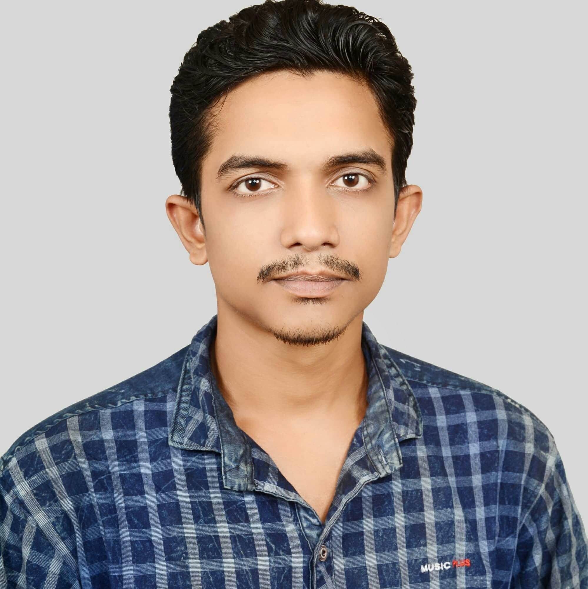

I am from Barguna and I also graduated from Barguna Collegiate high School in 2009 with Science. After that I did diploma from civil department and also did HSC. I lost a few years due to a special reason and now I am studying law in 3rd year at the "European University of Bangladesh". As well as studying I want to be a web developer. Recently I came to know about Shikhbesbai. The trainer "Farid Rony" sir is a very good teacher. So I took admission here. Everyone will pray for me. Thanks to all.
view my facebook 